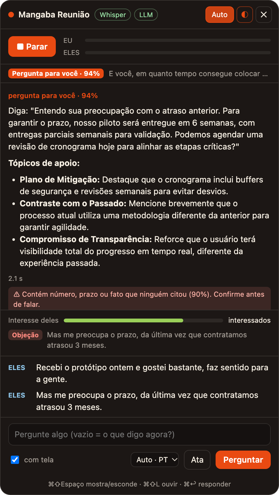

Transcreve você e os outros participantes, percebe quando a pergunta é para você e mostra o que dizer em 1 a 2 segundos.

Tela real do app, com respostas reais do modelo.
Capta seu microfone e o som da reunião à parte, sem driver nem senha de administrador, e transcreve no próprio computador.
Quando fazem uma pergunta, a resposta já aparece. Pergunta retórica ou para outra pessoa não dispara nada.
Marca compromissos (e se quem faz é você ou eles), decisões e objeções, e mede o interesse do outro lado. Tudo entra na ata.
Se a sugestão traz número, prazo ou fato que ninguém citou na conversa, aparece um alerta para você confirmar.
Numa entrevista em inglês, a frase pronta sai em inglês para você falar direto; os tópicos de apoio ficam em português.
Janela pequena, sempre por cima, que não aparece quando você compartilha a tela. Atalhos para ouvir, perguntar e esconder.
Quem decide se a fala é para você, o que é compromisso e o que é invenção é o Brier, o modelo de decisão da Mangaba. Ele dá uma probabilidade calibrada, e cada limiar foi escolhido em falas rotuladas para não gerar alarme falso.
| Pergunta ao Brier | Escore de Brier | Resultado |
|---|---|---|
| A pergunta é para você? (português) | 0,048 | 12/15, 0 falsos |
| A pergunta é para você? (inglês e espanhol) | 0,078 | 5/7, 0 falsos |
| É compromisso? Quem faz? | 0,068 | 6/6, 0 falsos |
| É decisão? | 0,122 | 4/4, 0 falsos |
| É objeção? | 0,056 | 4/4, 0 falsos |
| A sugestão inventou dado? | 0,044 | 5/5, 0 falsos |
Escore de Brier: quanto menor, melhor. Avaliação em 07 e 08/11/2026 com 20 a 30 casos por pergunta; os números serão revistos com reuniões reais.
O áudio não sai da máquina. A transcrição e a sessão ficam salvas localmente.
O texto vai para os modelos da Mangaba em datacenter no Brasil, sem transferência internacional, de acordo com a LGPD.
Transcrever uma conversa envolve a voz de outras pessoas. Informe os participantes de que a reunião está sendo transcrita.